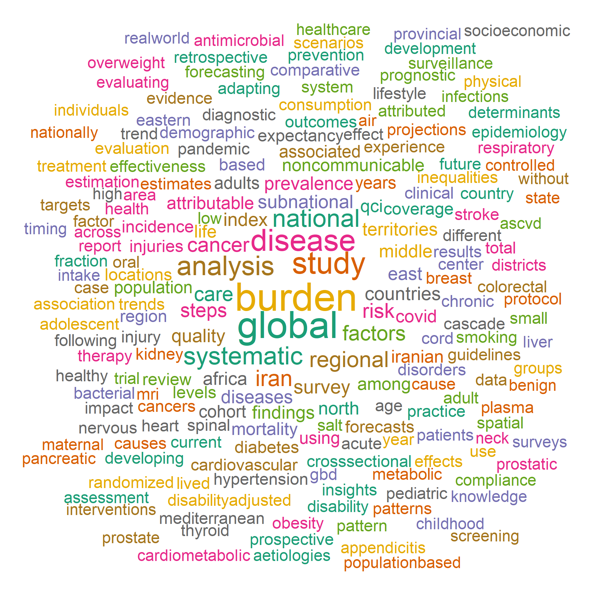

| Statistic | Value |
|---|---|
| Total publications | 195 |
| Total citations | 38,645 |
| Average citations (per paper) | 216 |
| Median citations (per paper) | 19 |
| h-index1 | 56 |
| i10-index2 | 121 |
| 1 h-index is the largest number h such that h publications have at least h citations. | |
| 2 i10-index is the number of publications with at least 10 citations. | |
Publications
Indexed Publications
Selected Publications
- Azadnajafabad S, Rezaei S, Almasi G, Ahmadi N, Golestani A, Rashidi MM, Abbasi-Kangevari M, Rezaei N, Rezaei N, Farzi Y, Ghasemi E, Yoosefi M, Haghshenas R, Nasserinejad M, Kazemi A, Abdolhamidi E, Saeedi Moghaddam S, Malekpour MR, Momen Nia Rankohi A, Djalalinia S, Farzadfar F. American Heart Association’s Life’s Simple 7 for cardiovascular health assessment among Iranian adults: a national cross-sectional study from STEPwise approach to non-communicable diseases risk factor surveillance (STEPS) survey 2021. BMJ Open. 2026. DOI: 10.1136/bmjopen-2025-101858. PMID: 41781047
- Koolaji S, Azadnajafabad S, Yoosefi M, Ahmadi N, Golestani A, Ghasemi E, Dilmaghani-Marand A, Rezaei N, Kazemi A, Rezaei N, Farzi Y, Rezaee K, Alipour Derouei A, Nasserinejad M, Abdolhamidi E, Rashidi MM, Haghshenas R, Momen Nia Rankohi A, Djalalinia S, Razi F, Larijani B, Farzdafar F. Subgroups With Metabolic Syndrome Show Different Association With Ischemic Heart Disease and Stroke; Findings of Iran STEPS Survey 2021. J Am Heart Assoc. 2025. DOI: 10.1161/JAHA.124.039240. PMID: 40996033
- Azadnajafabad S, Awan FZ, Ashjaei B, Alimadadi H, Soti Khiabani M. Analysis of Incidence and Risk Factors of Complicated Acute Appendicitis in Children: Evidence From a Tertiary Pediatric Center. Int J Pediatr. 2025. DOI: 10.1155/ijpe/1230753. PMID: 40171038
- Azadnajafabad S, Mohammadi E, Afzal S, Sohrabi H, Dabirmoghaddam P, Aghazadeh K. Clinical Characteristics and Voice Handicap Index Assessment of Common Benign Vocal Fold Lesions: A Case-Control Study From a Referral Center. J Voice. 2025. DOI: 10.1016/j.jvoice.2025.01.019. PMID: 39971675
- Azadnajafabad S, Ahmadi N, Rezaei N, Rashidi MM, Saeedi Moghaddam S, Mohammadi E, Abbasi-Kangevari M, Naderian M, Ghasemi E, Farzi Y, Kazemi A, Dilmaghani-Marand A, Yoosefi M, Rezaei S, Nasserinejad M, Fattahi N, Rezaei N, Haghshenas R, Foroutan Mehr E, Koolaji S, Razi F, Djalalinia S, Larijani B, Farzadfar F. Evaluation of the diabetes care cascade and compliance with WHO global coverage targets in Iran based on STEPS survey 2021. Scientific reports. 2023. DOI: 10.1038/s41598-023-39433-7. PMID: 37598214
- Azadnajafabad S, Saeedi Moghaddam S, Mohammadi E, Delazar S, Rashedi S, Baradaran HR, Mansourian M. Patterns of better breast cancer care in countries with higher human development index and healthcare expenditure: Insights from GLOBOCAN 2020. Frontiers in public health. 2023. DOI: 10.3389/fpubh.2023.1137286. PMID: 37124828
- Azadnajafabad S, Saeedi Moghaddam S, Keykhaei M, Shobeiri P, Rezaei N, Ghasemi E, Mohammadi E, Ahmadi N, Ghamari A, Shahin S, Rezaei N, Aghili M, Kaviani A, Larijani B, Farzadfar F. Expansion of the quality of care index on breast cancer and its risk factors using the global burden of disease study 2019. Cancer Med. 2023. DOI: 10.1002/cam4.4951. PMID: 35770711
- Farzadfar F, Naghavi M, Sepanlou SG, Saeedi Moghaddam S, Dangel WJ, Weaver ND, Aminorroaya A, Azadnajafabad S, Koolaji S, Mohammadi E, Rezaei N, GBD 2019 Iran Collaborators, Sarrafzadegan N, Rahimi-Movaghar V, Jamshidi HR, Mokdad AH, Hay SI, Murray CJL, Khosravi A, Moradi-Lakeh M, Asadi-Lari M, Malekzadeh R, Larijani B. Health system performance in Iran: a systematic analysis for the Global Burden of Disease Study 2019. Lancet. 2022. DOI: 10.1016/S0140-6736(21)02751-3. PMID: 35397236
- Azadnajafabad S, Saeedi Moghaddam S, Mohammadi E, Rezaei N, Ghasemi E, Fattahi N, Aminorroaya A, Azadnajafabad R, Aryannejad A, Rezaei N, Naderimagham S, Haghpanah V, Mokdad AH, Gharib H, Farzadfar F, Larijani B. Global, regional, and national burden and quality of care index (QCI) of thyroid cancer: A systematic analysis of the Global Burden of Disease Study 1990-2017. Cancer Med. 2021. DOI: 10.1002/cam4.3823. PMID: 33665966
- Sudharsanan N, Theilmann M, Kirschbaum TK, Manne-Goehler J, Azadnajafabad S, Bovet P, Chen S, Damasceno A, De Neve JW, Dorobantu M, Ebert C, Farzadfar F, Gathecha G, Gurung MS, Jamshidi K, Jorgensen JMA, Labadarios D, Lemp J, Lunet N, Mwangi JK, Moghaddam SS, Bahendeka SK, Zhumadilov Z, Barnighausen T, Vollmer S, Atun R, Davies JI, Geldsetzer P. Variation in the Proportion of Adults in Need of Blood Pressure-Lowering Medications by Hypertension Care Guideline in Low- and Middle-Income Countries: A Cross-Sectional Study of 1 037 215 Individuals From 50 Nationally Representative Surveys. Circulation. 2021. DOI: 10.1161/CIRCULATIONAHA.120.051620. PMID: 33554610
Bibliography (peer-reviewed journal articles)
2026
- Farrokhpour H, Nasserinejad M, Ahmadi N, Golestani A, Keykhaei M, Azadnajafabad S, Aminorroaya A, Naderian M, Rezaei N, Djalalinia S, Farzi Y, Rashidi MM, Rezaei N, Ghasemi E, Abdolhamidi E, Yoosefi M, Kazemi A, Haghshenas R, Majnoon MT, Farzadfar F. Epidemiology and cardiometabolic care in adults with ASCVD and high 10-year ASCVD risk: 2021 WHO STEPS study in Iran. Scientific reports. 2026. DOI: 10.1038/s41598-026-45344-0. PMID: 41896642
- Azadnajafabad S, Rezaei S, Almasi G, Ahmadi N, Golestani A, Rashidi MM, Abbasi-Kangevari M, Rezaei N, Rezaei N, Farzi Y, Ghasemi E, Yoosefi M, Haghshenas R, Nasserinejad M, Kazemi A, Abdolhamidi E, Saeedi Moghaddam S, Malekpour MR, Momen Nia Rankohi A, Djalalinia S, Farzadfar F. American Heart Association’s Life’s Simple 7 for cardiovascular health assessment among Iranian adults: a national cross-sectional study from STEPwise approach to non-communicable diseases risk factor surveillance (STEPS) survey 2021. BMJ Open. 2026. DOI: 10.1136/bmjopen-2025-101858. PMID: 41781047
- GBD 2023 Breast Cancer Collaborators. Global, regional, and national burden of breast cancer among females, 1990-2023, with forecasts to 2050: a systematic analysis for the Global Burden of Disease Study 2023. Lancet Oncol. 2026. DOI: 10.1016/S1470-2045(25)00730-2. PMID: 41785894
- Hajiuni K, Salehi S, Rajabli Z, Azadnajafabad S, Akbarpour S, Asgari S, Rezaei N. Prevalence and factors associated with comorbidities in Iranian patients with type 2 diabetes: A national study. PloS one. 2026. DOI: 10.1371/journal.pone.0343690. PMID: 41758780
- Haddadi M, Golestani A, Farzi Y, Rezaei N, Ghasemi E, Azadnajafabad S, Rezaei N, Ahmadi N, Rashidi MM, Nasserinejad M, Kazemi A, Yoosefi M, Mehr EF, Haghshenas R, Hajebi A, Fateh SM, Nazari N, Momen Nia Rankohi A, Djalalinia S, Farzadfar F. Iran is falling behind WHO cervical cancer elimination targets: HPV vaccination coverage and cervical cancer screening participation in 2021. PloS one. 2026. DOI: 10.1371/journal.pone.0341888. PMID: 41712588
- Sohrabi H, Ghavam SM, Azadnajafabad S, Rezaei N. Efficacy and Safety of Combination Therapy With Immune Checkpoint Inhibitors and Chemotherapy With Gemcitabine and Nab-Paclitaxel in Pancreatic Cancer: A Systematic Review. Cancer Med. 2026. DOI: 10.1002/cam4.71637. PMID: 41702836
- Ataei SM, Almasi G, Kazemi A, Ahmadi N, Golestani A, Rashidi MM, Rezaei N, Azadnajafabad S, Rezaei N, Dilmaghani-Marand A, Ghasemi E, Farzi Y, Yoosefi M, Rezaee K, Foroutan Mehr E, Nasserinejad M, Haghshenas R, Alipour Derouei A, Momen Nia Rankohi A, Djalalinia S, Farzadfar F. Prevalence and risk factors of chronic kidney disease among Iranian adults with and without diabetes: a cross-sectional study using STEPS 2021 national survey. BMJ Open. 2026. DOI: 10.1136/bmjopen-2025-111078. PMID: 41667164
- NIHR Global Health Research Unit on Global Surgery. 30-day postoperative mortality and the effects of hospital preparedness during the COVID-19 pandemic: a pooled analysis of prospective international cohort studies. Lancet Reg Health Eur. 2026. DOI: 10.1016/j.lanepe.2025.101566. PMID: 41648988
- Nosratinia N, Azadnajafabad S, Masinaei M, Golestani A, Ghamari SH, Abbasi-Kangevari M, Rezaei N, Khosravi S, Rezaei S, Ahmadi N, Kazemi A, Ghasemi E, Farzi Y, Rashidi MM, Yoosefi M, Rezaei N, Nasserinejad M, Haghshenas R, Mohammadi Fateh S, Keykhaei M, Moghimi M, Foroutan Mehr E, Momen Nia Rankohi A, Djalalinia S, Farzadfar F. Salt Intake Among the Iranian Population and Public Attitudes Toward Salt Consumption: National and Subnational Report From STEPS 2021. Food Sci Nutr. 2026. DOI: 10.1002/fsn3.71399. PMID: 41476714
- Rashidi A, Bastan MM, Golestani A, Azadnajafabad S, Rezaei N, Zeinodinimeymand M, Busehail M, Yaqoob M, Heidari-Foroozan M, Rashidi MM. Burden of osteoarthritis in North Africa and Middle East from 1990 to 2021: findings from the Global Burden of Disease 2021 study. Clin Rheumatol. 2026. DOI: 10.1007/s10067-025-07761-w. PMID: 41307626
2025
- Davoody S, Vakili K, Jazi K, Fathi M, Heidari-Foroozan M, Mofidi SA, Taremi M, Taherkhani A, Azadnajafabad S, Pour FH, Eslami S, Zangi M, Mohamadkhani A. Alterations of Gut Microbiota and Microbial Metabolites in Parkinson’s Disease: A Systematic Review. Mol Neurobiol. 2025. DOI: 10.1007/s12035-025-05598-7. PMID: 41400850
- Khanmohammadi S, Karimi K, Sadri M, Ebrahimpur M, Payab M, Azadnajafabad S, Akbarpour S, Sharifi F, Rezaei N. Prevalence and determinants of general and abdominal obesity and overweight among older Iranian adults using 2016 and 2021 STEPS surveys. Scientific reports. 2025. DOI: 10.1038/s41598-025-23885-0. PMID: 41238799
- Rashidi MM, Azizpour Y, Azadnajafabad S, Golestani A, Ebrahimpur M, Akbarpour S, Shahmohamadi E, Payab M, Rezaei N. Prevalence and associated factors of asthma and COPD among adults in Iran based on the 2021 STEPS survey. Scientific reports. 2025. DOI: 10.1038/s41598-025-22882-7. PMID: 41214093
- GBD 2023 Demographics Collaborators. Global age-sex-specific all-cause mortality and life expectancy estimates for 204 countries and territories and 660 subnational locations, 1950-2023: a demographic analysis for the Global Burden of Disease Study 2023. Lancet. 2025. DOI: 10.1016/S0140-6736(25)01330-3. PMID: 41092927
- GBD 2023 Disease and Injury and Risk Factor Collaborators. Burden of 375 diseases and injuries, risk-attributable burden of 88 risk factors, and healthy life expectancy in 204 countries and territories, including 660 subnational locations, 1990-2023: a systematic analysis for the Global Burden of Disease Study 2023. Lancet. 2025. DOI: 10.1016/S0140-6736(25)01637-X. PMID: 41092926
- GBD 2023 Causes of Death Collaborators. Global burden of 292 causes of death in 204 countries and territories and 660 subnational locations, 1990-2023: a systematic analysis for the Global Burden of Disease Study 2023. Lancet. 2025. DOI: 10.1016/S0140-6736(25)01917-8. PMID: 41092928
- EMR Antimicrobial Resistance Collaborators. The burden of bacterial antimicrobial resistance in the WHO Eastern Mediterranean Region 1990-2021: a cross-country systematic analysis with forecasts to 2050. Lancet Public Health. 2025. DOI: 10.1016/S2468-2667(25)00201-4. PMID: 41082884
- Koolaji S, Azadnajafabad S, Yoosefi M, Ahmadi N, Golestani A, Ghasemi E, Dilmaghani-Marand A, Rezaei N, Kazemi A, Rezaei N, Farzi Y, Rezaee K, Alipour Derouei A, Nasserinejad M, Abdolhamidi E, Rashidi MM, Haghshenas R, Momen Nia Rankohi A, Djalalinia S, Razi F, Larijani B, Farzdafar F. Subgroups With Metabolic Syndrome Show Different Association With Ischemic Heart Disease and Stroke; Findings of Iran STEPS Survey 2021. J Am Heart Assoc. 2025. DOI: 10.1161/JAHA.124.039240. PMID: 40996033
- Global Burden of Cardiovascular Diseases and Risks 2023 Collaborators. Global, Regional, and National Burden of Cardiovascular Diseases and Risk Factors in 204 Countries and Territories, 1990-2023. J Am Coll Cardiol. 2025. DOI: 10.1016/j.jacc.2025.08.015. PMID: 40990886
- GBD 2021 Low Bone Mineral Density Collaborators. The global, regional, and national burden attributable to low bone mineral density, 1990-2020: an analysis of a modifiable risk factor from the Global Burden of Disease Study 2021. Lancet Rheumatol. 2025. DOI: 10.1016/S2665-9913(25)00105-5. PMID: 40972625
- Mousavi SM, Younesian S, Katebian S, Golestani A, Khanmohammadi S, Khosravi S, Etemadi Y, Rezaei N, Azadnajafabad S, Larijani B. Temporal trend in the national and sub-national burden of cancers attributable to risk factors in Iran from 1990 to 2021: Findings from the global burden of disease study 2021. PloS one. 2025. DOI: 10.1371/journal.pone.0330993. PMID: 40857242
- Teufel F, Roddewig P, Marcus ME, Theilmann M, Andall-Brereton G, Aryal K, Azadnajafabad S, Bovet P, Dorobantu M, Farzadfar F, Houehanou C, Sibai A, Stokes AC, Labadarios D, Gurung M, Jorgensen J, Karki K, Lunet N, Saeedi Moghaddam S, Mwangi KJ, Sturua L, Barnighausen T, Flood D, Geldsetzer P, Damasceno A, Davies J, Vollmer S, Ali MK, Manne-Goehler J, Bulstra C. National evidence on glucose-lowering medication use for diabetes from 62 low- and middle-income countries. Nat Commun. 2025. DOI: 10.1038/s41467-025-59123-4. PMID: 40759643
- Azangou-Khyavy M, Ghasemi E, Ebrahimi N, Rashidi MM, Abbasi-Kangevari M, Ahmadi N, Khanali J, Kazemi A, Dilmaghani-Marand A, Farzi Y, Yoosefi M, Abdolhamidi E, Moghimi M, Nasserinejad M, Fattahi N, Azadnajafabad S, Alipour-Daroei A, Rezaee K, Djalalinia S, Rezaei N, Jamshidi H, Farzadfar F. National and sub-national sero-epidemiology of immunoglobulin G against SARS-CoV-2 in Iran in 2021. PloS one. 2025. DOI: 10.1371/journal.pone.0313795. PMID: 40743259
- Teymouri A, Khonji MS, Alaghi P, Azadnajafabad S, Teymouri A, Delazar S. Diagnostic accuracy of MRI radiomics in predicting lymph node metastasis in prostate cancer: A systematic review. Eur J Radiol Open. 2025. DOI: 10.1016/j.ejro.2025.100673. PMID: 40777161
- GBD 2023 Kidney Failure with Replacement Therapy Collaborators. Global, regional, and national prevalence of kidney failure with replacement therapy and associated aetiologies, 1990-2023: a systematic analysis for the Global Burden of Disease Study 2023. Lancet Glob Health. 2025. DOI: 10.1016/S2214-109X(25)00198-6. PMID: 40712611
- GBD 2023 Vaccine Coverage Collaborators. Global, regional, and national trends in routine childhood vaccination coverage from 1980 to 2023 with forecasts to 2030: a systematic analysis for the Global Burden of Disease Study 2023. Lancet. 2025. DOI: 10.1016/S0140-6736(25)01037-2. PMID: 40578370
- Khanmohammadi S, Malekpour MR, Habibzadeh A, Rezaei N, Azadnajafabad S, Rezaei N, Ghamari A, Haghshenas R, Farzi Y, Djalalinia S, Farzadfar F. Demographic and metabolic risk factors for non-communicable diseases in Iran: insights from a prospective cohort study. J Diabetes Metab Disord. 2025. DOI: 10.1007/s40200-025-01645-1. PMID: 40520242
- GBD 2021 Global Subarachnoid Hemorrhage Risk Factors Collaborators. Global, Regional, and National Burden of Nontraumatic Subarachnoid Hemorrhage: The Global Burden of Disease Study 2021. JAMA Neurol. 2025. DOI: 10.1001/jamaneurol.2025.1522. PMID: 40406922
- GBD 2019 Acute and Chronic Care Collaborators. Characterising acute and chronic care needs: insights from the Global Burden of Disease Study 2019. Nat Commun. 2025. DOI: 10.1038/s41467-025-56910-x. PMID: 40335470
- Azadnajafabad S, Awan FZ, Ashjaei B, Alimadadi H, Soti Khiabani M. Analysis of Incidence and Risk Factors of Complicated Acute Appendicitis in Children: Evidence From a Tertiary Pediatric Center. Int J Pediatr. 2025. DOI: 10.1155/ijpe/1230753. PMID: 40171038
- Djalalinia S, Khosravi S, Yoosefi M, Salahi S, Varniab ZS, Golestani A, Rezaei N, Kazemi A, Dilmaghani-Marand A, Rezaei N, Ghasemi E, Ahmadi N, Rashidi MM, Farzi Y, Rezaee K, Nasserinejad M, Azadnajafabad S, Abdolhamidi E, Haghshenas R, Derouei AA, Rankohi AMN, Farzadfar F. Evaluation of the hypercholesterolemia care cascade and compliance with NCEP-ATP III guidelines in Iran based on the WHO STEPS survey. Lipids Health Dis. 2025. DOI: 10.1186/s12944-025-02506-9. PMID: 40102862
- Hantoushzadeh S, Ghaemi M, Hivechi N, Norooznezhad A, Tavakolikia N, Hadizadeh A, Azadnajafabad S, Rostamian A, Mohaghegh Z, Kazemi Aski S, Mousavi S, Nassiri S, Abbasalizadeh F, Taghavi S, Anoosheh S, Saadati Shamir R, Hoorshad N, Ghorbizadeh Vahdani F, Heidary Z, Saedi N, Sharemi SH, Farzadi S, Milani F, Hasheminejad MM, Hashemi Z, Asadi F, Shirvani M, Mirzaei M, Panahi Z, Samiee E, Razavi J, Khanmohammad R, Dashtkoohi M, Salehi M. Sinopharm COVID-19 Vaccine (BBIBP-CorV) Safety and Side Effects During Pregnancy: A Multicenter Cohort Study. Journal of Obstetrics, Gynecology and Cancer Research. 2025. DOI: N/A. PMID: N/A
- GBD 2021 HAP Collaborators. Global, regional, and national burden of household air pollution, 1990-2021: a systematic analysis for the Global Burden of Disease Study 2021. Lancet. 2025. DOI: 10.1016/S0140-6736(24)02840-X. PMID: 40118081
- Pourabhari Langroudi A, Farzi Y, Almasi G, Shokri Varniab Z, Abbasi-Kangevari M, Rezaei N, Golestani A, Ahmadi N, Rezaei N, Ghasemi E, Azadnajafabad S, Nasserinejad M, Rashidi MM, Kazemi A, Yoosefi M, Foroutan Mehr E, Haghshenas R, Moghaddam SS, Hajebi A, Mohammadi Fateh S, Moghimi M, Momen Nia Rankohi A, Afsari M, Djalalinia S, Farzadfar F. Age of tobacco smoking initiation among Iranian adults based on National and Subnational data from the 2021 STEPS survey. Scientific reports. 2025. DOI: 10.1038/s41598-025-86675-8. PMID: 40074760
- Delazar S, Azadnajafabad S, Firouznia K, Nowroozi MR, Amini E, Fotouhi M, Ghanaati H. Outcomes of Prostatic Artery Embolization for Treating Benign Prostatic Hyperplasia Symptoms: A Prospective Single-Center Study. Health Sci Rep. 2025. DOI: 10.1002/hsr2.70565. PMID: 40078904
- Azadnajafabad S, Mohammadi E, Afzal S, Sohrabi H, Dabirmoghaddam P, Aghazadeh K. Clinical Characteristics and Voice Handicap Index Assessment of Common Benign Vocal Fold Lesions: A Case-Control Study From a Referral Center. J Voice. 2025. DOI: 10.1016/j.jvoice.2025.01.019. PMID: 39971675
- Amouzadeh Omrani F, Afzal S, Baroutkoub M, Salimi S, Barati H, Azadnajafabad S, Kokly S, Omidian MM. A Comparative Analysis of Functional Outcomes between Lateral and Posterolateral Approaches in Total Hip Arthroplasty. Adv Biomed Res. 2025. DOI: 10.4103/abr.abr_195_24. PMID: 40213601
- GBD 2021 Europe Life Expectancy Collaborators. Changing life expectancy in European countries 1990-2021: a subanalysis of causes and risk factors from the Global Burden of Disease Study 2021. Lancet Public Health. 2025. DOI: 10.1016/S2468-2667(25)00009-X. PMID: 39983748
- Bastan MM, Nejadghaderi SA, Khanmohammadi S, Behnoush AH, Khalaji A, Malekpour MR, Rashidi MM, Azadnajafabad S, Azangou-Khyavy M, Momtazmanesh S, Payab M, Amini M. Burden of cardiometabolic disease attributable to sugar sweetened beverages consumption in North Africa and the Middle East from 1990 to 2021. J Diabetes Metab Disord. 2025. DOI: 10.1007/s40200-025-01578-9. PMID: 39959579
- Global Nutrition Target Collaborators. Global, regional, and national progress towards the 2030 global nutrition targets and forecasts to 2050: a systematic analysis for the Global Burden of Disease Study 2021. Lancet. 2025. DOI: 10.1016/S0140-6736(24)01821-X. PMID: 39667386
- Arian A, Karimi N, Ahmadinejad N, Azadnajafabad S, Delazar S. Refining MRI protocols for endometriosis: a comparative study of abbreviated and full MRI sequences. Br J Radiol. 2025. DOI: 10.1093/bjr/tqae230. PMID: 39531257
- Lamsehchi A, Solgi MS, Sabzehei MK, Basiri B, Ghane ET, Asadi KK, Azadnajafabad S. Short-term outcomes of oropharyngeal administration of colostrum in preterm neonates: a double-blind placebocontrolled randomized trial. Clin Exp Pediatr. 2025. DOI: 10.3345/cep.2024.00591. PMID: 39483043
- GBD 2021 Upper Respiratory Infections Otitis Media Collaborators. Global, regional, and national burden of upper respiratory infections and otitis media, 1990-2021: a systematic analysis from the Global Burden of Disease Study 2021. Lancet Infect Dis. 2025. DOI: 10.1016/S1473-3099(24)00430-4. PMID: 39265593
2024
- Castagna A, Amouzadeh Omrani F, Afzal S, Baroutkoub M, Hajikarimloo B, Azadnajafabad S, Mohammad Sharifi G, Kokly S. Effectiveness of Modified Sleeper Stretch Combined with Modified Cross-Body Adduction in Alleviating Shoulder Stiffness Among Overhead Throwing Athletes: A Retrospective Cohort Study. Trauma Monthly. 2024. DOI: 10.30491/tm.2024.466150.1747. PMID: N/A
- GBD 2021 US Burden of Disease and Forecasting Collaborators. Burden of disease scenarios by state in the USA, 2022-50: a forecasting analysis for the Global Burden of Disease Study 2021. Lancet. 2024. DOI: 10.1016/S0140-6736(24)02246-3. PMID: 39645377
- Ayati Firoozabadi M, Mafi AH, Afzal S, Beheshti Fard S, Khaledian H, Bozorgsavoji A, Azadnajafabad S, Mortazavi SMJ. Does body mass index (BMI) significantly influence aseptic loosening in primary total knee arthroplasty? Insights from a long-term retrospective cohort study. BMC Musculoskelet Disord. 2024. DOI: 10.1186/s12891-024-07913-0. PMID: 39616316
- GBD 2021 HIV Collaborators. Global, regional, and national burden of HIV/AIDS, 1990-2021, and forecasts to 2050, for 204 countries and territories: the Global Burden of Disease Study 2021. Lancet HIV. 2024. DOI: 10.1016/S2352-3018(24)00212-1. PMID: 39608393
- GBD 2021 US Obesity Forecasting Collaborators. National-level and state-level prevalence of overweight and obesity among children, adolescents, and adults in the USA, 1990-2021, and forecasts up to 2050. Lancet. 2024. DOI: 10.1016/S0140-6736(24)01548-4. PMID: 39551059
- GBD 2021 Global Stillbirths Collaborators. Global, regional, and national stillbirths at 20 weeks’ gestation or longer in 204 countries and territories, 1990-2021: findings from the Global Burden of Disease Study 2021. Lancet. 2024. DOI: 10.1016/S0140-6736(24)01925-1. PMID: 39510107
- Amouzadeh Omrani F, Afzal S, Baroutkoub M, Barati H, Azadnajafabad S, Keipour A. Distant migration of a broken guide pin following femoral neck fixation: a case report. J Med Case Rep. 2024. DOI: 10.1186/s13256-024-04868-7. PMID: 39488715
- Aminorroaya A, Fattahi N, Azadnajafabad S, Mohammadi E, Jamshidi K, Rouhifard Khalilabad M, Mohammadi Fateh S, Naderimagham S, Rezaei N, Larijani B, Farzadfar F. Burden of non-communicable diseases in Iran: past, present, and future. J Diabetes Metab Disord. 2024. DOI: 10.1007/s40200-020-00669-z. PMID: 39610553
- Malekpour M-R, Rezaei N, Azadnajafabad S, Khanali J, Azangou-Khyavy M, Saeedi Moghaddam S, Heidari-Foroozan M, Rezazadeh-Khadem S, Ghamari S-H, Abbasi-Kangevari M, GBD 2019 Injuries Collaborators, Naghavi M, Larijani B, Farzadfar F. Global, regional, and national burden of injuries, and burden attributable to injuries risk factors, 1990 to 2019: results from the Global Burden of Disease study 2019. Public Health. 2024. DOI: 10.1016/j.puhe.2024.06.011. PMID: 39454232
- GBD 2019 TB Racial Disparity Collaborators. Racial disparity in mortality from tuberculosis in the US between states with and without a history of Jim-Crow laws: an analysis of the Global Burden of Disease (GBD) and risk factors study, 1990 to 2019. BMC Public Health. 2024. DOI: 10.1186/s12889-024-20522-9. PMID: 39506669
- GBD 2021 Tobacco Forecasting Collaborators. Forecasting the effects of smoking prevalence scenarios on years of life lost and life expectancy from 2022 to 2050: a systematic analysis for the Global Burden of Disease Study 2021. Lancet Public Health. 2024. DOI: 10.1016/S2468-2667(24)00166-X. PMID: 39366729
- GBD 2021 Stroke Risk Factor Collaborators. Global, regional, and national burden of stroke and its risk factors, 1990-2021: a systematic analysis for the Global Burden of Disease Study 2021. Lancet Neurol. 2024. DOI: 10.1016/S1474-4422(24)00369-7. PMID: 39304265
- GBD 2021 Antimicrobial Resistance Collaborators. Global burden of bacterial antimicrobial resistance 1990-2021: a systematic analysis with forecasts to 2050. Lancet. 2024. DOI: 10.1016/S0140-6736(24)01867-1. PMID: 39299261
- Soleimani H, Tavakoli K, Nasrollahizadeh A, Azadnajafabad S, Mashayekhi M, Ebrahimi P, Masoudkabir F, Vasheghani-Farahani A, Hosseini K. Estimating the burden of atrial fibrillation and atrial flutter with projection to 2050 in Iran. Scientific reports. 2024. DOI: 10.1038/s41598-024-71296-4. PMID: 39217230
- Hajebi A, Nasserinejad M, Rezaei N, Azadnajafabad S, Rashidi MM, Ahmadi N, Ghasemi E, Farzi Y, Yoosefi M, Djalalinia S, Fattahi N, Rezaei S, Foroutan Mehr E, Kazemi A, Haghshenas R, Rezaee K, Momen Nia Rankohi A, Afsari M, Mahdavihezaveh A, Jamshidi H, Farzadfar F. Alcohol consumption among Iranian population based on the findings of STEPS survey 2021. Scientific reports. 2024. DOI: 10.1038/s41598-024-66257-w. PMID: 39039151
- GBD 2021 Appendicitis Collaborator Group. Trends and levels of the global, regional, and national burden of appendicitis between 1990 and 2021: findings from the Global Burden of Disease Study 2021. Lancet Gastroenterol Hepatol. 2024. DOI: 10.1016/S2468-1253(24)00157-2. PMID: 39032499
- GBD 2019 MSK in Adolescents Collaborators. Global pattern, trend, and cross-country inequality of early musculoskeletal disorders from 1990 to 2019, with projection from 2020 to 2050. Med. 2024. DOI: 10.1016/j.medj.2024.04.009. PMID: 38834074
- GBD 2021 Forecasting Collaborators. Burden of disease scenarios for 204 countries and territories, 2022-2050: a forecasting analysis for the Global Burden of Disease Study 2021. Lancet. 2024. DOI: 10.1016/S0140-6736(24)00685-8. PMID: 38762325
- GBD 2021 Risk Factors Collaborators. Global burden and strength of evidence for 88 risk factors in 204 countries and 811 subnational locations, 1990-2021: a systematic analysis for the Global Burden of Disease Study 2021. Lancet. 2024. DOI: 10.1016/S0140-6736(24)00933-4. PMID: 38762324
- GBD 2021 Diseases and Injuries Collaborators. Global incidence, prevalence, years lived with disability (YLDs), disability-adjusted life-years (DALYs), and healthy life expectancy (HALE) for 371 diseases and injuries in 204 countries and territories and 811 subnational locations, 1990-2021: a systematic analysis for the Global Burden of Disease Study 2021. Lancet. 2024. DOI: 10.1016/S0140-6736(24)00757-8. PMID: 38642570
- GBD 2019 North Africa and the Middle East Neurology Collaborators. The burden of neurological conditions in north Africa and the Middle East, 1990-2019: a systematic analysis of the Global Burden of Disease Study 2019. Lancet Glob Health. 2024. DOI: 10.1016/S2214-109X(24)00093-7. PMID: 38604203
- GBD 2021 Causes of Death Collaborators. Global burden of 288 causes of death and life expectancy decomposition in 204 countries and territories and 811 subnational locations, 1990-2021: a systematic analysis for the Global Burden of Disease Study 2021. Lancet. 2024. DOI: 10.1016/S0140-6736(24)00367-2. PMID: 38582094
- GBD 2021 Fertility and Forecasting Collaborators. Global fertility in 204 countries and territories, 1950-2021, with forecasts to 2100: a comprehensive demographic analysis for the Global Burden of Disease Study 2021. Lancet. 2024. DOI: 10.1016/S0140-6736(24)00550-6. PMID: 38521087
- GBD 2021 Tuberculosis Collaborators. Global, regional, and national age-specific progress towards the 2020 milestones of the WHO End TB Strategy: a systematic analysis for the Global Burden of Disease Study 2021. Lancet Infect Dis. 2024. DOI: 10.1016/S1473-3099(24)00007-0. PMID: 38518787
- GBD 2021 Nervous System Disorders Collaborators. Global, regional, and national burden of disorders affecting the nervous system, 1990-2021: a systematic analysis for the Global Burden of Disease Study 2021. Lancet Neurol. 2024. DOI: 10.1016/S1474-4422(24)00038-3. PMID: 38493795
- GBD 2021 Demographics Collaborators. Global age-sex-specific mortality, life expectancy, and population estimates in 204 countries and territories and 811 subnational locations, 1950-2021, and the impact of the COVID-19 pandemic: a comprehensive demographic analysis for the Global Burden of Disease Study 2021. Lancet. 2024. DOI: 10.1016/S0140-6736(24)00476-8. PMID: 38484753
- GBD 2021 Neck Pain Collaborators. Global, regional, and national burden of neck pain, 1990-2020, and projections to 2050: a systematic analysis of the Global Burden of Disease Study 2021. Lancet Rheumatol. 2024. DOI: 10.1016/S2665-9913(23)00321-1. PMID: 38383088
- Ilkhani S, Saeedi Moghaddam S, Sakhaei D, Rashidi M-M, Azadnajafabad S, Azangou-Khyavy M, Ahmadi N, Tabatabaei-Malazy O, Naderian M, Ghasemi E, Shobeiri P, Fateh SM, Kompani F, Larijani B, Farzadfar F. Global, regional, and national survey on burden and quality of care index (QCI) of nasopharyngeal cancer: A systematic analysis of the Global Burden of disease study 1990–2019. Oral Oncology Reports. 2024. DOI: 10.1016/j.oor.2024.100198. PMID: N/A
- Yazdi NA, Parviz S, Delazar S, Azadnajafabad S, Aleseidi S, Saffar H, Sadighi N. A case report on pulmonary metastasis of giant cell tumor mimicking arteriovenous malformation. Radiol Case Rep. 2024. DOI: 10.1016/j.radcr.2023.11.075. PMID: 38229600
- Khadembashiri MM, Ghasemi E, Khadembashiri MA, Azadnajafabad S, Moghaddam SS, Eslami M, Rashidi MM, Naderian M, Esfahani Z, Ahmadi N, Rezaei N, Fateh SM, Kompani F, Larijani B, Farzadfar F. The global, regional, and national burden and quality of care index of kidney cancer; a global burden of disease systematic analysis 1990-2019. Int J Qual Health Care. 2024. DOI: 10.1093/intqhc/mzad113. PMID: 38183265
- Shoaee S, Ghasemi E, Sofi-Mahmudi A, Shamsoddin E, Tovani-Palone MR, Roshani S, Heydari MH, Yoosefi M, Masinaei M, Azadnaejafabadi S, Mohammadi E, Rezaei N, Larijani B, Fakhrzadeh H, Farzadfar F. Global, regional, and national burden and quality of care index (QCI) of oral disorders: a systematic analysis of the global burden of disease study 1990-2017. BMC oral health. 2024. DOI: 10.1186/s12903-023-03808-z. PMID: 38243206
- GBD 2019 Asia and All Cancers Collaborators. Temporal patterns of cancer burden in Asia, 1990-2019: a systematic examination for the Global Burden of Disease 2019 study. Lancet Reg Health Southeast Asia. 2024. DOI: 10.1016/j.lansea.2023.100333. PMID: 38361599
- Langroudi AP, Farzi Y, Masinaei M, Varniab ZS, Shahin S, Rashidi MM, Moghaddam SS, Rahimi S, Khalili M, Keykhaei M, Ahmadi N, Kazemi A, Ghasemi E, Azadnajafabad S, Yoosefi M, Fattahi N, Nasserinejad M, Rezaei N, Haghshenas R, Dilmaghani-Marand A, Abdolhamidi E, Djalalinia S, Rezaei N, Larijani B, Farzadfar F. Exploring metabolically healthy obesity: prevalence, characteristics, and cardiovascular risk in the Iranian population based on the STEPS 2021. J Diabetes Metab Disord. 2024. DOI: 10.1007/s40200-023-01364-5. PMID: 38932890
- Shokri Varniab Z, Saeedi Moghaddam S, Pourabhari Langroudi A, Azadnajafabad S, Mortazavi SS, Sheidaei A, Gohari K, Farzi Y, Shirzad Moghaddam Z, Sohrabi H, Shati M. The levels and trends of cancer incidence in the elderly population at national and sub-national scales in Iran from 1990 to 2016. Cancer Rep (Hoboken). 2024. DOI: 10.1002/cnr2.1937. PMID: 38049962
- Rashidi MM, Saeedi Moghaddam S, Azadnajafabad S, Mohammadi E, Khalaji A, Malekpour MR, Keykhaei M, Rezaei N, Esfahani Z, Rezaei N, GBD 2019 NAME Kidney Dysfunction Risk Factor Collaborators, Mokdad AH, Murray CJL, Naghavi M, Larijani B, Farzadfar F. Mortality and disability-adjusted life years in North Africa and Middle East attributed to kidney dysfunction: a systematic analysis for the Global Burden of Disease Study 2019. Clin Kidney J. 2024. DOI: 10.1093/ckj/sfad279. PMID: 38288035
- Rashidi MM, Saeedi Moghaddam S, Azadnajafabad S, Heidari-Foroozan M, Haddadi M, Sharifnejad Tehrani Y, Keykhaei M, Ghasemi E, Mohammadi E, Ahmadi N, Malekpour MR, Mohammadi Fateh S, Rezaei N, Mehrazma M, Larijani B, Farzadfar F. Burden and quality of care index of chronic kidney disease: Global Burden of Disease analysis for 1990-2019. Nephrol Dial Transplant. 2024. DOI: 10.1093/ndt/gfad172. PMID: 37587021
- Fattahi N, Azadnajafabad S, Mohammadi E, Aminorroaya A, Rezaei S, Ghasemi E, Rezaei N, Naderimagham S, Larijani B, Farzadfar F. Geographical, gender and age inequalities in non-communicable diseases both at national and provincial levels in Iran. J Diabetes Metab Disord. 2024. DOI: 10.1007/s40200-020-00713-y. PMID: 39610535
- GBD 2019 North Africa and the Middle East Drug-Use Disorders Collaborators. Drug-use disorders in the Eastern Mediterranean Region: a glance at GBD 2019 findings. Soc Psychiatry Psychiatr Epidemiol. 2024. DOI: 10.1007/s00127-023-02587-w. PMID: 37999752
- Fattahi N, Ghanbari A, Djalalinia S, Rezaei N, Mohammadi E, Azadnajafabad S, Abbasi-Kangevari M, Aryannejad A, Aminorroaya A, Rezaei N, Azmin M, Ramezani R, Jafari F, Aghili M, Farzadfar F. Global, Regional, and National Quality of Care Index (QCI) of Gastric Cancer: A Systematic Analysis for the Global Burden of Disease Study 1990-2017. J Gastrointest Cancer. 2024. DOI: 10.1007/s12029-023-00950-3. PMID: 37365424
2023
- Salehi MR, Ghaemi M, Masoumi S, Azadnajafabad S, Norooznezhad AH, Ghotbizadeh Vahdani F, Panahi Z, Hivechi N, Eshghinejad A, Nassiri S, Eshraghi N, Behzadian A, Asadi F, Mansouri Z, Hadavand S, Bahari R, Banihashemi ES, Razavi Sj, Faramarzi S, Dashtkoohi M, Hantoushzadeh S. Comparative Analysis of Corticosteroid Therapy in Pregnant Women with COVID-19: Evaluating Glycemic Control and Transient Hyperglycemia. Fertility, Gynecology and Andrology. 2023. DOI: 10.5812/fga-142142. PMID: N/A
- Shahmohamadi E, Yousefi M, Mohammadi E, Ghanbari A, Shaker E, Azadnajafabad S, Abbasi-Kangevari M, Rashidi MM, Rezaei N, Mohammadi Fateh S, Foroutan Mehr E, Rahimi S, Effatpanah M, Jamshidi H, Farzadfar F. National and Provincial Prevalence of Cigarette Smoking in Iran; A Systematic Analysis of 12 Years of STEPS Experience. Arch Iran Med. 2023. DOI: 10.34172/aim.2023.72. PMID: 38310402
- GBD Spinal Cord Injuries Collaborators. Global, regional, and national burden of spinal cord injury, 1990-2019: a systematic analysis for the Global Burden of Disease Study 2019. Lancet Neurol. 2023. DOI: 10.1016/S1474-4422(23)00287-9. PMID: 37863591
- Shahmohamadi E, Ghasemi E, Mohammadi E, Nasserinejad M, Azadnajafabad S, Malekpour MR, Rashidi MM, Ahmadi N, Rezaei N, Naderian M, Yoosefi M, Farzi Y, Rezaei N, Haghshenas R, Abdolhamidi E, Golestani A, Kazemi A, Delaram Dizaj M, Nazari N, Momen Nia Rankohi A, Darman M, Djalalinia S, Moghisi A, Farzadfar F. Current incidence of injuries in Iran; findings of STEPS survey 2021. Heliyon. 2023. DOI: 10.1016/j.heliyon.2023.e20907. PMID: 37920484
- Iezadi S, Ebrahimi N, Ghamari SH, Esfahani Z, Rezaei N, Ghasemi E, Moghaddam SS, Azadnajafabad S, Abdi Z, Varniab ZS, Golestani A, Langroudi AP, Dilmaghani-Marand A, Farzi Y, Pourasghari H. Global and regional quality of care index (QCI) by gender and age in oesophageal cancer: A systematic analysis of the Global Burden of Disease Study 1990-2019. PloS one. 2023. DOI: 10.1371/journal.pone.0292348. PMID: 37788249
- GBD 2021 Rheumatoid Arthritis Collaborators. Global, regional, and national burden of rheumatoid arthritis, 1990-2020, and projections to 2050: a systematic analysis of the Global Burden of Disease Study 2021. Lancet Rheumatol. 2023. DOI: 10.1016/S2665-9913(23)00211-4. PMID: 37795020
- Maroufi SF, Shobeiri P, Mohammadi E, Azadnajafabad S, Malekpour MR, Ghasemi E, Rashidi MM, Saeedi Moghaddam S, Rezaei N, Sharifnejad Tehrani Y, Mohammadi Fateh S, Ahmadi N, Farzi Y, Rezaei N, Larijani B. A Global, Regional, and National Survey on Burden and Quality of Care Index of Multiple Sclerosis: Global Burden of Disease Systematic Analysis 1990-2019. Neuroepidemiology. 2023. DOI: 10.1159/000533527. PMID: 37734328
- Khanali J, Ghasemi E, Rashidi MM, Ahmadi N, Ghamari SH, Azangou-Khyavy M, Malekpour MR, Abbasi-Kangevari M, Hashemi SM, Naderian M, Rezaei N, Dilmaghani-Marand A, Farzi Y, Kazemi A, Yoosefi M, Hajebi A, Rezaei S, Azadnajafabad S, Fattahi N, Nasserinejad M, Abdolhamidi E, Haghshenas R, Rezaei N, Djalalinia S, Larijani B, Farzadfar F. Prevalence of plasma lipid abnormalities and associated risk factors among Iranian adults based on the findings from STEPs survey 2021. Scientific reports. 2023. DOI: 10.1038/s41598-023-42341-5. PMID: 37726324
- Maroufi SF, Azadnajafabad S, Kheiri G, Jazayeri SB, Ghodsi Z, Ghawami H, Kheyri M, Harrop JS, Fehlings MG, Rahimi-Movaghar V. Adopting and Adapting Clinical Practice Guidelines for the Use of Baseline MRI in Acute Spinal Cord Injury in a Developing Country. Archives of Neuroscience. 2023. DOI: 10.5812/ans-135297. PMID: N/A
- GBD 2019 IMID Collaborators. Global, regional, and national incidence of six major immune-mediated inflammatory diseases: findings from the global burden of disease study 2019. EClinicalMedicine. 2023. DOI: 10.1016/j.eclinm.2023.102193. PMID: 37731935
- GBD 2019 Lip Oral and Pharyngeal Cancer Collaborators. The Global, Regional, and National Burden of Adult Lip, Oral, and Pharyngeal Cancer in 204 Countries and Territories: A Systematic Analysis for the Global Burden of Disease Study 2019. JAMA oncology. 2023. DOI: 10.1001/jamaoncol.2023.2960. PMID: 37676656
- Soleimani Z, Mosadeghrad AM, Alighardashi M, Azadnajafabad S, Safari M, Mokhtari Z, Moradi M, Shalyari N, Kazemizad L, Mesdaghinia A. Knowledge, attitude, and practice of nurse aids and service staff about nosocomial infection control: A case study in Iran. Environmental Health Engineering and Management. 2023. DOI: 10.34172/ehem.2023.38. PMID: N/A
- Azadnajafabad S, Ahmadi N, Rezaei N, Rashidi MM, Saeedi Moghaddam S, Mohammadi E, Abbasi-Kangevari M, Naderian M, Ghasemi E, Farzi Y, Kazemi A, Dilmaghani-Marand A, Yoosefi M, Rezaei S, Nasserinejad M, Fattahi N, Rezaei N, Haghshenas R, Foroutan Mehr E, Koolaji S, Razi F, Djalalinia S, Larijani B, Farzadfar F. Evaluation of the diabetes care cascade and compliance with WHO global coverage targets in Iran based on STEPS survey 2021. Scientific reports. 2023. DOI: 10.1038/s41598-023-39433-7. PMID: 37598214
- Azadnajafabad S, Saeedi Moghaddam S, Mohammadi E, Rezaei N, Rashidi MM, Rezaei N, Mokdad AH, Naghavi M, Murray CJL, Larijani B, Farzadfar F, GBD 2019 NAME Breast Cancer Collaborators. Burden of breast cancer and attributable risk factors in the North Africa and Middle East region, 1990-2019: a systematic analysis for the Global Burden of Disease Study 2019. Frontiers in oncology. 2023. DOI: 10.3389/fonc.2023.1132816. PMID: 37593096
- GBD 2021 Anaemia Collaborators. Prevalence, years lived with disability, and trends in anaemia burden by severity and cause, 1990-2021: findings from the Global Burden of Disease Study 2021. Lancet Haematol. 2023. DOI: 10.1016/S2352-3026(23)00160-6. PMID: 37536353
- GBD 2019 Meningitis Antimicrobial Resistance Collaborators. Global, regional, and national burden of meningitis and its aetiologies, 1990-2019: a systematic analysis for the Global Burden of Disease Study 2019. Lancet Neurol. 2023. DOI: 10.1016/S1474-4422(23)00195-3. PMID: 37479374
- GBD 2019 Allergic Disorders Collaborators. Global, regional, and national burden of allergic disorders and their risk factors in 204 countries and territories, from 1990 to 2019: A systematic analysis for the Global Burden of Disease Study 2019. Allergy. 2023. DOI: 10.1111/all.15807. PMID: 37431853
- Abbasi-Kangevari M, Ghanbari A, Malekpour MR, Ghamari SH, Azadnajafabad S, Saeedi Moghaddam S, Keykhaei M, Haghshenas R, Golestani A, Rashidi MM, Rezaei N, Ghasemi E, Rezaei N, Jamshidi HR, Larijani B. Exploring the clinical benefit of ventilation therapy across various patient groups with COVID-19 using real-world data. Scientific reports. 2023. DOI: 10.1038/s41598-023-37912-5. PMID: 37400560
- GBD 2021 Diabetes Collaborators. Global, regional, and national burden of diabetes from 1990 to 2021, with projections of prevalence to 2050: a systematic analysis for the Global Burden of Disease Study 2021. Lancet. 2023. DOI: 10.1016/S0140-6736(23)01301-6. PMID: 37356446
- GBD 2019 Iran Breast Cancer Collaborators. National and subnational burden of female and male breast cancer and risk factors in Iran from 1990 to 2019: results from the Global Burden of Disease study 2019. Breast Cancer Res. 2023. DOI: 10.1186/s13058-023-01633-4. PMID: 37101247
- Tayebi H, Azadnajafabad S, Maroufi SF, Pour-Rashidi A, Khorasanizadeh M, Faramarzi S, Slavin KV. Applications of brain-computer interfaces in neurodegenerative diseases. Neurosurg Rev. 2023. DOI: 10.1007/s10143-023-02038-9. PMID: 37256332
- GBD 2019 North Africa and the Middle East MRF Collaborators. The burden of metabolic risk factors in North Africa and the Middle East, 1990-2019: findings from the Global Burden of Disease Study. EClinicalMedicine. 2023. DOI: 10.1016/j.eclinm.2023.102022. PMID: 37287869
- Moradi S, Parsaei A, Saeedi Moghaddam S, Aryannejad A, Azadnajafabad S, Rezaei N, Mashinchi B, Esfahani Z, Shobeiri P, Rezaei N, GBD 2019 Iran MRF Collaborators, Naghavi M, Larijani B, Farzadfar F. Metabolic risk factors attributed burden in Iran at national and subnational levels, 1990 to 2019. Frontiers in public health. 2023. DOI: 10.3389/fpubh.2023.1149719. PMID: 37325329
- GBD 2021 Low Back Pain Collaborators. Global, regional, and national burden of low back pain, 1990-2020, its attributable risk factors, and projections to 2050: a systematic analysis of the Global Burden of Disease Study 2021. Lancet Rheumatol. 2023. DOI: 10.1016/S2665-9913(23)00098-X. PMID: 37273833
- Mohammadi E, Yoosefi M, Shaker E, Shahmohamadi E, Ghasemi E, Ahmadi N, Azadnajafabad S, Rashidi MM, Rezaei N, Koolaji S, Dilmaghani-Marand A, Fateh SM, Kazemi A, Haghshenas R, Rezaei N. Inequalities in prevalence of hypertension, prehypertension, anti-hypertensive coverage, awareness, and effective treatment in 429 districts of Iran; a population-based STEPS 2016 small area spatial estimation model. J Diabetes Metab Disord. 2023. DOI: 10.1007/s40200-023-01186-5. PMID: 37975079
- Rashidi MM, Saeedi Moghaddam S, Azadnajafabad S, Heidari-Foroozan M, Hashemi SM, Mohammadi E, Esfahani Z, Ebrahimi N, Shobeiri P, Malekpour MR, Abbasi-Kangevari M, Rashedi S, Mohammadi Fateh S, Larijani B, Farzadfar F. Low bone mineral density, a neglected condition in North Africa and Middle East: estimates from the Global Burden of Disease Study, 1990-2019. Osteoporos Int. 2023. DOI: 10.1007/s00198-023-06778-8. PMID: 37217657
- Hajebi A, Nasserinejad M, Azadnajafabad S, Ghasemi E, Rezaei N, Yoosefi M, Ghamari A, Keykhaei M, Ghanbari A, Mohammadi E, Rashidi MM, Gorgani F, Moghimi M, Namazi Shabestari A, Farzadfar F. Physical Inactivity, Inequalities, and Disparities Across Districts of Iran: A STEPs Survey-Based Analysis. J Phys Act Health. 2023. DOI: 10.1123/jpah.2022-0113. PMID: 37172954
- GBD 2019 North Africa and the Middle East Air Pollution Collaborators. Effect of air pollution on disease burden, mortality, and life expectancy in North Africa and the Middle East: a systematic analysis for the Global Burden of Disease Study 2019. Lancet Planet Health. 2023. DOI: 10.1016/S2542-5196(23)00053-0. PMID: 37164512
- GBD 2019 Chronic Respiratory Diseases Collaborators. Global burden of chronic respiratory diseases and risk factors, 1990-2019: an update from the Global Burden of Disease Study 2019. EClinicalMedicine. 2023. DOI: 10.1016/j.eclinm.2023.101936. PMID: 37229504
- GBD Fatty Liver Disease Sustainable Development Goal Collaborators. The global fatty liver disease Sustainable Development Goal country score for 195 countries and territories. Hepatology. 2023. DOI: 10.1097/HEP.0000000000000361. PMID: 37595128
- GBD 2019 Iran Kidney Dysfunction Collaborators. Trends of national and sub-national burden attributed to kidney dysfunction risk factor in Iran: 1990-2019. Front Endocrinol (Lausanne). 2023. DOI: 10.3389/fendo.2023.1115833. PMID: 36923218
- Azadnajafabad S, Saeedi Moghaddam S, Mohammadi E, Delazar S, Rashedi S, Baradaran HR, Mansourian M. Patterns of better breast cancer care in countries with higher human development index and healthcare expenditure: Insights from GLOBOCAN 2020. Frontiers in public health. 2023. DOI: 10.3389/fpubh.2023.1137286. PMID: 37124828
- Maroufi SF, Azadnajafabad S, Pour-Rashidi A, Jazayeri SB, Ghodsi Z, Ghawami H, Kheyri M, Farahbakhsh F, Azarhomayoun A, Bahreini M, Arab Kheradmand J, Faghih Jouibari M, Zareh M, Fehlings MG, Rahimi-Movaghar V. Adopting and adapting clinical practice guidelines for timing of decompressive surgery in acute spinal cord injury from a developed world context to a developing region. Acta Neurochir (Wien). 2023. DOI: 10.1007/s00701-023-05591-w. PMID: 37074391
- Koolaji S, Sharifnejad Tehrani Y, Azadnajafabad S, Saeedi Moghaddam S, Shahin S, Ghamari A, Ahmadi N, Rezaei N, Keykhaei M, Tavolinejad H, Ghamari SH, Abbasi-Kangevari M, Rezaei N, Larijani B, Farzadfar F. A 30-year trend of ischemic heart disease burden in a developing country; a systematic analysis of the global burden of disease study 2019 in Iran. Int J Cardiol. 2023. DOI: 10.1016/j.ijcard.2023.03.012. PMID: 36898585
- Karimi A, Saeedi Moghaddam S, Azadnajafabad S, Esfahani Z, Sharifnejad Tehrani Y, Abbasi-Kangevari M, Shobeiri P, Ghamari SH, Masinaei M, Rezaei N, Shahin S, Rayzan E, Rezaei N, Larijani B, Kompani F. The burden of childhood and adolescent cancers in North Africa and the Middle East (NAME) region: findings from the Global Burden of Disease study 2019. BMC Pediatr. 2023. DOI: 10.1186/s12887-023-03931-4. PMID: 36890483
- Fallahi MS, Azadnajafabad S, Maroufi SF, Pour-Rashidi A, Khorasanizadeh M, Sattari SA, Faramarzi S, Slavin KV. Application of Vagus Nerve Stimulation in Spinal Cord Injury Rehabilitation. World neurosurgery. 2023. DOI: 10.1016/j.wneu.2023.02.101. PMID: 36858292
- Keykhaei M, Rezaei N, Roshani S, Montazeri F, Nasserinejad M, Azadnajafabad S, Mohammadi E, Ghasemi E, Rezaei N, Farrokhpour H, Foroumadi R, Bagheri S, Moghimi M, Larijani B, Farzadfar F. Population attributable fraction estimates of cardiovascular diseases in different blood pressure levels in a large-scale cross-sectional study: a focus on prevention strategies and treatment coverage. Blood pressure monitoring. 2023. DOI: 10.1097/MBP.0000000000000612. PMID: 36606475
- Mohammadi E, Moghaddam SS, Azadnajafabad S, Maroufi SF, Rashidi MM, Naderian M, Jafari A, Sharifi G, Ghasemi E, Rezaei N, Malekpour MR, Kompani F, Rezaei N, Larijani B, Farzadfar F. Epidemiology of Brain and Other Central Nervous System Cancers in the North Africa and Middle East Region: A Systematic Analysis of the Global Burden of Disease Study 1990-2019. World neurosurgery. 2023. DOI: 10.1016/j.wneu.2022.12.112. PMID: 36586579
- Djalalinia S, Azadnajafabad S, Rezaei N, Malekpour MR, Ghasemi E, Yoosefi M, Naderimagham S, Ghamari A, Haghshenas R, Farzi Y, Moghaddam SS, Rezaei N, Farzadfar F. The first nationally and sub-nationally representative non-communicable diseases cohort study in Iran: Iran Cohort Study (ICS) protocol. J Diabetes Metab Disord. 2023. DOI: 10.1007/s40200-022-01143-8. PMID: 37255781
- Gorgani F, Esfahani Z, Ghamari SH, Ghasemi E, Azadnajafabad S, Shobeiri P, Mohammadi E, Moghaddam SS, Abbasi-Kangevari M, Fattahi N, Tehrani YS, Farzi Y, Rezaei N, Larijani B, Farzadfar F. Global, regional, and national burden and quality of care index of liver cirrhosis by cause from global burden of disease 1990-2019. Journal of gastroenterology and hepatology. 2023. DOI: 10.1111/jgh.16041. PMID: 36287036
- Heidari-Foroozan M, Saeedi Moghaddam S, Keykhaei M, Shobeiri P, Azadnajafabad S, Esfahani Z, Rezaei N, Nasserinejad M, Rezaei N, Rayzan E, Shokri Varniab Z, Golestani A, Haghshenas R, Kompani F, Larijani B, Farzadfar F. Regional and national burden of leukemia and its attributable burden to risk factors in 21 countries and territories of North Africa and Middle East, 1990-2019: results from the GBD study 2019. J Cancer Res Clin Oncol. 2023. DOI: 10.1007/s00432-022-04293-7. PMID: 36048271
- Azadnajafabad S, Saeedi Moghaddam S, Keykhaei M, Shobeiri P, Rezaei N, Ghasemi E, Mohammadi E, Ahmadi N, Ghamari A, Shahin S, Rezaei N, Aghili M, Kaviani A, Larijani B, Farzadfar F. Expansion of the quality of care index on breast cancer and its risk factors using the global burden of disease study 2019. Cancer Med. 2023. DOI: 10.1002/cam4.4951. PMID: 35770711
2022
- GBD 2019 Elderly Injuries Collaborators. Injury burden in individuals aged 50 years or older in the Eastern Mediterranean region, 1990-2019: a systematic analysis from the Global Burden of Disease Study 2019. Lancet Healthy Longev. 2022. DOI: 10.1016/S2666-7568(22)00038-1. PMID: 35515813
- Khanmohammadi S, Saeedi Moghaddam S, Azadnajafabad S, Rezaei N, Esfahani Z, Rezaei N, GBD 2019 NAME Tracheal Bronchus and Lung Cancer Collaborators, Naghavi M, Larijani B, Farzadfar F. Burden of tracheal, bronchus, and lung cancer in North Africa and Middle East countries, 1990 to 2019: Results from the GBD study 2019. Frontiers in oncology. 2022. DOI: 10.3389/fonc.2022.1098218. PMID: 36844919
- Keramati MR, Delazar S, Tabary MR, Araghi F, Azadnajafabad S, Kazemeini A, Ahmadi-Tafti SM, Behboudi B, Keshvari A, Fazeli MS. Prognostic Factors of Disease Recurrence and Overall Survival Following Curative Resection of Colon Cancer: A 10-year Cohort from a Referral Center. Med J Islam Repub Iran. 2022. DOI: 10.47176/mjiri.36.139. PMID: 36479535
- Djalalinia S, Azadnajafabad S, Ghasemi E, Yoosefi M, Rezaei N, Farzi Y, Kazemi A, Ahmadi N, Nasserinejad M, Fattahi N, Rezaei S, Abdolhamidi E, Foroutan Mehr E, Haghshenas R, Rezaei N, Abdi J, Moghisi A, Mahdavihezaveh A, Akbari Sari A, Raeisi A, Jamshidi H, Larijani B, Farzadfar F. Protocol Design for Surveillance of Risk Factors of Non-communicable Diseases During the COVID-19 Pandemic: An Experience from Iran STEPS Survey 2021. Arch Iran Med. 2022. DOI: 10.34172/aim.2022.99. PMID: 37543889
- Karimi A, Shobeiri P, Azadnajafabad S, Masinaei M, Rezaei N, Ghanbari A, Rezaei N, Rouhifard M, Shahin S, Rashidi MM, Keykhaei M, Kazemi A, Amini E, Larijani B, Farzadfar F. A global, regional, and national survey on burden and Quality of Care Index (QCI) of bladder cancer: The global burden of disease study 1990-2019. PloS one. 2022. DOI: 10.1371/journal.pone.0275574. PMID: 36264881
- Nejadghaderi SA, Moghaddam SS, Azadnajafabad S, Rezaei N, Rezaei N, Tavangar SM, Jamshidi H, Mokdad AH, Naghavi M, Farzadfar F, Larijani B, GBD 2019 NAME Thyroid Cancer Collaborators. Burden of thyroid cancer in North Africa and Middle East 1990-2019. Frontiers in oncology. 2022. DOI: 10.3389/fonc.2022.955358. PMID: 36212501
- Balali P, Nasserinejad M, Azadnajafabad S, Ahmadi N, Delavari F, Rashidian L, Ghasemi E, Dilmaghani-Marand A, Fateh SM, Ebrahimi N, Kazemi A, Derouei AA, Djalalinia S, Rezaei N, Delavari A. Is elevated ALT associated with lifestyle risk factors? A population-based survey. J Diabetes Metab Disord. 2022. DOI: 10.1007/s40200-022-01137-6. PMID: 36404851
- GBD Maternal Middle East Collaborators. Levels and Trends of Maternal Mortality and Morbidity by Cause in North Africa and Middle East, 1990 to 2019: An Analysis for the Global Burden of Disease Study 2019. Arch Iran Med. 2022. DOI: 10.34172/aim.2022.105. PMID: 37542398
- Malekpour MR, Azadnajafabad S, Rezazadeh-Khadem S, Bhalla K, Ghasemi E, Heydari ST, Ghamari SH, Abbasi-Kangevari M, Rezaei N, Manian M, Shahraz S, Rezaei N, Lankarani KB, Farzadfar F. The effectiveness of fixed speed cameras on Iranian taxi drivers: An evaluation of the influential factors. Frontiers in public health. 2022. DOI: 10.3389/fpubh.2022.964214. PMID: 36111189
- Tavolinejad H, Roshani S, Rezaei N, Ghasemi E, Yoosefi M, Rezaei N, Ghamari A, Shahin S, Azadnajafabad S, Malekpour MR, Rashidi MM, Farzadfar F. A machine learning approach to evaluate the state of hypertension care coverage: From 2016 STEPs survey in Iran. PloS one. 2022. DOI: 10.1371/journal.pone.0273560. PMID: 36129936
- Rashedi S, Mardani M, Rafati A, Khavandi MM, Mohammadi F, Javanshir S, Sarallah R, Dolatshahi M, Sabahi M, Azadnajafabad S, Tavolinejad H, Rezaei N. Circular RNAs as prognostic and diagnostic biomarkers in renal cell carcinoma. J Clin Lab Anal. 2022. DOI: 10.1002/jcla.24670. PMID: 35989533
- Ghamari A, Rezaei N, Malekpour MR, Azadnajafabad S, Jafari A, Ahmadi N, Bhalla K, Shahraz S, Bose D, Farzadfar F. The effect of non-punitive peer comparison and performance feedback on drivers’ behavior using the telematics: The first randomized trial in Iran. J Safety Res. 2022. DOI: 10.1016/j.jsr.2022.07.010. PMID: 36031273
- Abbasi-Kangevari M, Ahmadi N, Fattahi N, Rezaei N, Malekpour MR, Ghamari SH, Moghaddam SS, Azadnajafabad S, Esfahani Z, Kolahi AA, Roshani S, Rezazadeh-Khadem S, Gorgani F, Naleini SN, Naderimagham S, Larijani B, Farzadfar F. Quality of care of peptic ulcer disease worldwide: A systematic analysis for the global burden of disease study 1990-2019. PloS one. 2022. DOI: 10.1371/journal.pone.0271284. PMID: 35913985
- Shahbandi A, Shobeiri P, Azadnajafabad S, Saeedi Moghaddam S, Sharifnejad Tehrani Y, Ebrahimi N, Rezaei N, Rashidi MM, Ghamari SH, Abbasi-Kangevari M, Koolaji S, Haghshenas R, Rezaei N, Larijani B, Farzadfar F. Burden of stroke in North Africa and Middle East, 1990 to 2019: a systematic analysis for the global burden of disease study 2019. BMC neurology. 2022. DOI: 10.1186/s12883-022-02793-0. PMID: 35896999
- Azangou-Khyavy M, Saeedi Moghaddam S, Rezaei N, Esfahani Z, Rezaei N, Azadnajafabad S, Rashidi MM, Mohammadi E, Collaborators GBDITC, Tavangar SM, Jamshidi H, Mokdad AH, Naghavi M, Farzadfar F, Larijani B. National, sub-national, and risk-attributed burden of thyroid cancer in Iran from 1990 to 2019. Scientific reports. 2022. DOI: 10.1038/s41598-022-17115-0. PMID: 35918489
- GBD 2019 Iran Maternal Collaborators. Maternal Mortality and Morbidity by Cause in Provinces of Iran, 1990 to 2019: An Analysis for the Global Burden of Disease Study 2019. Arch Iran Med. 2022. DOI: 10.34172/aim.2022.93. PMID: 37543883
- GBD 2019 Iran Child Collaborators. Neonate, Infant, and Child Mortality by Cause in Provinces of Iran: An Analysis for the Global Burden of Disease Study 2019. Arch Iran Med. 2022. DOI: 10.34172/aim.2022.80. PMID: 37543870
- GBD 2019 Antimicrobial Resistance Collaborators. Global mortality associated with 33 bacterial pathogens in 2019: a systematic analysis for the Global Burden of Disease Study 2019. Lancet. 2022. DOI: 10.1016/S0140-6736(22)02185-7. PMID: 36423648
- GBD 2019 NAME Prostate Cancer Collaborators. The burden of prostate cancer in North Africa and Middle East, 1990-2019: Findings from the global burden of disease study. Frontiers in oncology. 2022. DOI: 10.3389/fonc.2022.961086. PMID: 36176394
- GBD 2019 Cancer Risk Factors Collaborators. The global burden of cancer attributable to risk factors, 2010-19: a systematic analysis for the Global Burden of Disease Study 2019. Lancet. 2022. DOI: 10.1016/S0140-6736(22)01438-6. PMID: 35988567
- GBD 2019 LRI Collaborators. Age-sex differences in the global burden of lower respiratory infections and risk factors, 1990-2019: results from the Global Burden of Disease Study 2019. Lancet Infect Dis. 2022. DOI: 10.1016/S1473-3099(22)00510-2. PMID: 35964613
- GBD 2019 Hepatitis B Collaborators. Global, regional, and national burden of hepatitis B, 1990-2019: a systematic analysis for the Global Burden of Disease Study 2019. Lancet Gastroenterol Hepatol. 2022. DOI: 10.1016/S2468-1253(22)00124-8. PMID: 35738290
- GBD 2020 Alcohol Collaborators. Population-level risks of alcohol consumption by amount, geography, age, sex, and year: a systematic analysis for the Global Burden of Disease Study 2020. Lancet. 2022. DOI: 10.1016/S0140-6736(22)00847-9. PMID: 35843246
- GBD 2019 Colorectal Cancer Collaborators. Global, regional, and national burden of colorectal cancer and its risk factors, 1990-2019: a systematic analysis for the Global Burden of Disease Study 2019. Lancet Gastroenterol Hepatol. 2022. DOI: 10.1016/S2468-1253(22)00044-9. PMID: 35397795
- GBD 2019 Adolescent Transport and Unintentional Injuries Collaborators. Adolescent transport and unintentional injuries: a systematic analysis using the Global Burden of Disease Study 2019. Lancet Public Health. 2022. DOI: 10.1016/S2468-2667(22)00134-7. PMID: 35779567
- GBD 2019 Adolescent Young Adult Cancer Collaborators. The global burden of adolescent and young adult cancer in 2019: a systematic analysis for the Global Burden of Disease Study 2019. Lancet Oncol. 2022. DOI: 10.1016/S1470-2045(21)00581-7. PMID: 34871551
- Global Burden of Disease 2019 Cancer Collaboration. Cancer Incidence, Mortality, Years of Life Lost, Years Lived With Disability, and Disability-Adjusted Life Years for 29 Cancer Groups From 2010 to 2019: A Systematic Analysis for the Global Burden of Disease Study 2019. JAMA oncology. 2022. DOI: 10.1001/jamaoncol.2021.6987. PMID: 34967848
- Shokri Varniab Z, Sharifnejad Tehrani Y, Pourabhari Langroudi A, Azadnajafabad S, Rezaei N, Rashidi MM, Esfahani Z, Malekpour MR, Ghasemi E, Ghamari A, Dilmaghani-Marand A, Mohammadi Fateh S, Namazi Shabestari A, Larijani B, Farzadfar F. Estimates of incidence, prevalence, mortality, and disability-adjusted life years of lung cancer in Iran, 1990-2019: A systematic analysis from the global burden of disease study 2019. Cancer Med. 2022. DOI: 10.1002/cam4.4792. PMID: 35698451
- Nejadghaderi SA, Roshani S, Mohammadi E, Yoosefi M, Rezaei N, Esfahani Z, Azadnajafabad S, Ahmadi N, Shahin S, Kazemi A, Namazi Shabestari A, Khosravi A, Mokdad AH, Larijani B, Farzadfar F. The global, regional, and national burden and quality of care index (QCI) of colorectal cancer; a global burden of disease systematic analysis 1990-2019. PloS one. 2022. DOI: 10.1371/journal.pone.0263403. PMID: 35446852
- Mohammadi E, Azadnajafabad S, Keykhaei M, Shakiba A, Ebrahimi Meimand S, Hosseini Shabanan S, Mahdavi Sharif P, Asgardoon MH, Shafieian M, Ghodsi Z, Heydari ST, Atlasi R, Ansari-Moghaddam A, Sharif-Alhoseini M, O’Reilly GM, Rahimi-Movaghar V. Barriers and factors associated with the use of helmets by Motorcyclists: A scoping review. Accident; analysis and prevention. 2022. DOI: 10.1016/j.aap.2022.106667. PMID: 35413615
- Soleimani H, Ghasemi E, Saeedi Moghaddam S, Azadnajafabad S, Rezaei N, Masinaei M, Naderimagham S, Rezaei N, Malekpour MR, Keykhaei M, Gorgani F, Kazemi A, Tahmasebi S, Makhdoom R, Farzadfar F. Assessing the effect of socioeconomic factors on prevalence of dyslipidemia among iranian adult population; district level analysis from 2016 STEPS national study using small area estimation. J Diabetes Metab Disord. 2022. DOI: 10.1007/s40200-022-01027-x. PMID: 35673466
- Fallahzadeh A, Esfahani Z, Sheikhy A, Keykhaei M, Moghaddam SS, Tehrani YS, Rezaei N, Ghasemi E, Azadnajafabad S, Mohammadi E, Koolaji S, Shahin S, Rezaei N, Larijani B, Farzadfar F. National and subnational burden of stroke in Iran from 1990 to 2019. Annals of clinical and translational neurology. 2022. DOI: 10.1002/acn3.51547. PMID: 35395141
- Farzadfar F, Naghavi M, Sepanlou SG, Saeedi Moghaddam S, Dangel WJ, Weaver ND, Aminorroaya A, Azadnajafabad S, Koolaji S, Mohammadi E, Rezaei N, GBD 2019 Iran Collaborators, Sarrafzadegan N, Rahimi-Movaghar V, Jamshidi HR, Mokdad AH, Hay SI, Murray CJL, Khosravi A, Moradi-Lakeh M, Asadi-Lari M, Malekzadeh R, Larijani B. Health system performance in Iran: a systematic analysis for the Global Burden of Disease Study 2019. Lancet. 2022. DOI: 10.1016/S0140-6736(21)02751-3. PMID: 35397236
- Keshvari A, Ettehadi R, Azadnajafabad S, Keramati MR. Encapsulated Peritoneal Sclerosis due to Peritoneal Dialysis: Long-Term Experience Following Surgical Operation. Indian Journal of Surgery. 2022. DOI: 10.1007/s12262-022-03339-x. PMID: N/A
- Mohammadi E, Azmin M, Fattahi N, Ghasemi E, Azadnajafabad S, Rezaei N, Rashidi MM, Keykhaei M, Zokaei H, Rezaei N, Haghshenas R, Kaveh F, Pakatchian E, Jamshidi H, Farzadfar F. A pilot study using financial transactions’ spatial information to define high-risk neighborhoods and distribution pattern of COVID-19. Digital health. 2022. DOI: 10.1177/20552076221076252. PMID: 35154804
- Mohammadi E, Azadnajafabad S, Goudarzi M, Tayebi Meybodi K, Nejat F, Habibi Z. Single-dose antibiotic prophylaxis compared with multiple-dose protocol in clean pediatric neurosurgical interventions: a nonrandomized, historically controlled equivalence trial. Journal of neurosurgery Pediatrics. 2022. DOI: 10.3171/2021.9.PEDS21416. PMID: 34861647
- Momtazmanesh S, Saeedi Moghaddam S, Malakan Rad E, Azadnajafabad S, Ebrahimi N, Mohammadi E, Rouhifard M, Rezaei N, Masinaei M, Rezaei N, Keykhaei M, Aminorroaya A, Ghamari A, Larijani B, Farzadfar F. Global, regional, and national burden and quality of care index of endocarditis: the global burden of disease study 1990-2019. Eur J Prev Cardiol. 2022. DOI: 10.1093/eurjpc/zwab211. PMID: 34897404
- Mardani M, Rashedi S, Keykhaei M, Farrokhpour H, Azadnajafabad S, Tavolinejad H, Rezaei N. Long non-coding RNAs (lncRNAs) as prognostic and diagnostic biomarkers in multiple myeloma: A systematic review and meta-analysis. Pathology, research and practice. 2022. DOI: 10.1016/j.prp.2021.153726. PMID: 34942515
- Azadnajafabad S, Saeedi Moghaddam S, Rezaei N, Ghasemi E, Naderimagham S, Azmin M, Mohammadi E, Jamshidi K, Fattahi N, Zokaei H, Mehregan A, Damerchilu B, Fathi P, Erfani H, Norouzinejad A, Gouya MM, Jamshidi H, Malekzadeh R, Larijani B, Farzadfar F. A Report on Statistics of an Online Self-screening Platform for COVID-19 and Its Effectiveness in Iran. International journal of health policy and management. 2022. DOI: 10.34172/ijhpm.2020.252. PMID: 33619926
- Aminorroaya A, Yoosefi M, Rezaei N, Shabani M, Mohammadi E, Fattahi N, Azadnajafabad S, Nasserinejad M, Rezaei N, Naderimagham S, Ahmadi N, Ebrahimi H, Mirbolouk M, Blaha MJ, Larijani B, Farzadfar F. Global, regional, and national quality of care of ischaemic heart disease from 1990 to 2017: a systematic analysis for the Global Burden of Disease Study 2017. Eur J Prev Cardiol. 2022. DOI: 10.1093/eurjpc/zwab066. PMID: 34041535
2021
- Rezaei N, Montazeri F, Malekpour MR, Ghanbari A, Azadnajafabad S, Mohammadi E, Rezaei N, Naderimagham S, Ghasemi E, Abbasi-Kangevari M, Ghamari SH, Nasserinejad M, Kaveh F, Norouzinejad A, Gouya MM, Raeisi A, Farzadfar F, Larijani B. COVID-19 in patients with diabetes: factors associated with worse outcomes. J Diabetes Metab Disord. 2021. DOI: 10.1007/s40200-021-00910-3. PMID: 34729367
- Abbasi-Kangavari M, Masinaei M, Fattahi N, Rahimi Y, Rezaei N, Azadnajafabad S, Ghanbari A, Fakhimi R, Jourahmad Z, Ghamari SH, Malekpour MR, Ahmadi N, Hajebi A, Jafarpour H, Farzadfar F. Current Inequities in Smoking Prevalence on District Level in Iran: A Systematic Analysis on the STEPS Survey. J Res Health Sci. 2021. DOI: 10.34172/jrhs.2022.75. PMID: 36511256
- Sofi-Mahmudi A, Masinaei M, Shamsoddin E, Tovani-Palone MR, Heydari MH, Shoaee S, Ghasemi E, Azadnajafabad S, Roshani S, Rezaei N, Rashidi MM, Kalantar Mehrjardi R, Hajebi AA, Larijani B, Farzadfar F. Global, regional, and national burden and quality of care index (QCI) of lip and oral cavity cancer: a systematic analysis of the Global Burden of Disease Study 1990-2017. BMC oral health. 2021. DOI: 10.1186/s12903-021-01918-0. PMID: 34724951
- Malekpour MR, Abbasi-Kangevari M, Azadnajafabad S, Ghamari SH, Rezaei N, Rezazadeh-Khadem S, Rezaei N, Aminorroaya A, Abdolhamidi E, Mohammadi Fateh S, Haghshenas R, Roshani S, Ahmadi N, Jamshidi K, Naderimagham S, Farzadfar F. How the scientific community responded to the COVID-19 pandemic: A subject-level time-trend bibliometric analysis. PloS one. 2021. DOI: 10.1371/journal.pone.0258064. PMID: 34591941
- Aryannejad A, Tabary M, Ebrahimi N, Mohammadi E, Fattahi N, Roshani S, Masinaei M, Naderimagham S, Azadnajafabad S, Jamshidi K, Fateh SM, Moghimi M, Kompani F, Rezaei N, Farzadfar F. Global, regional, and national survey on the burden and quality of care of pancreatic cancer: a systematic analysis for the Global Burden of Disease study 1990-2017. Pancreatology. 2021. DOI: 10.1016/j.pan.2021.09.002. PMID: 34561167
- Keykhaei M, Koolaji S, Mohammadi E, Kalantar R, Saeedi Moghaddam S, Aminorroaya A, Zokaei S, Azadnajafabad S, Rezaei N, Ghasemi E, Rezaei N, Haghshenas R, Farzi Y, Rashedi S, Larijani B, Farzadfar F. Dissection of non-pharmaceutical interventions implemented by Iran, South Korea, and Turkey in the fight against COVID-19 pandemic. J Diabetes Metab Disord. 2021. DOI: 10.1007/s40200-021-00877-1. PMID: 34540760
- Sudharsanan N, Theilmann M, Kirschbaum TK, Manne-Goehler J, Azadnajafabad S, Bovet P, Chen S, Damasceno A, De Neve JW, Dorobantu M, Ebert C, Farzadfar F, Gathecha G, Gurung MS, Jamshidi K, Jorgensen JMA, Labadarios D, Lemp J, Lunet N, Mwangi JK, Moghaddam SS, Bahendeka SK, Zhumadilov Z, Barnighausen T, Vollmer S, Atun R, Davies JI, Geldsetzer P. Variation in the Proportion of Adults in Need of Blood Pressure-Lowering Medications by Hypertension Care Guideline in Low- and Middle-Income Countries: A Cross-Sectional Study of 1 037 215 Individuals From 50 Nationally Representative Surveys. Circulation. 2021. DOI: 10.1161/CIRCULATIONAHA.120.051620. PMID: 33554610
- Mohammadi E, Hanaei S, Azadnajafabad S, Tayebi Meybodi K, Habibi Z, Nejat F. The effect of external ventricular drain tunneling length on CSF infection rate in pediatric patients: a randomized, double-blind, 3-arm controlled trial. Journal of neurosurgery Pediatrics. 2021. DOI: 10.3171/2020.9.PEDS20748. PMID: 33740757
- Mohammadi E, Ghasemi E, Azadnajafabad S, Rezaei N, Saeedi Moghaddam S, Ebrahimi Meimand S, Fattahi N, Habibi Z, Karimi Yarandi K, Amirjamshidi A, Nejat F, Kompani F, Mokdad AH, Larijani B, Farzadfar F. A global, regional, and national survey on burden and Quality of Care Index (QCI) of brain and other central nervous system cancers; global burden of disease systematic analysis 1990-2017. PloS one. 2021. DOI: 10.1371/journal.pone.0247120. PMID: 33617563
- Keykhaei M, Masinaei M, Mohammadi E, Azadnajafabad S, Rezaei N, Saeedi Moghaddam S, Rezaei N, Nasserinejad M, Abbasi-Kangevari M, Malekpour MR, Ghamari SH, Haghshenas R, Koliji K, Kompani F, Farzadfar F. A global, regional, and national survey on burden and Quality of Care Index (QCI) of hematologic malignancies; global burden of disease systematic analysis 1990-2017. Exp Hematol Oncol. 2021. DOI: 10.1186/s40164-021-00198-2. PMID: 33557940
- Azadnajafabad S, Saeedi Moghaddam S, Mohammadi E, Rezaei N, Rezaei N, Naderimagham S, Haghshenas R, Ghasemi E, Farzi Y, Abdolhamidi E, Mohammadi Fateh S, Zokaei H, Kazemi A, Tabatabaei-Malazy O, Farzadfar F, Larijani B. Importance of Population-Wide Studies in Controlling Non-Communicable Diseases: Achievements of Non-Communicable Diseases Research Center, Endocrinology and Metabolism Research Institute. Iranian Journal of Diabetes and Lipid Disorders. 2021. DOI: N/A. PMID: N/A
- Azadnajafabad S, Saeedi Moghaddam S, Mohammadi E, Rezaei N, Ghasemi E, Fattahi N, Aminorroaya A, Azadnajafabad R, Aryannejad A, Rezaei N, Naderimagham S, Haghpanah V, Mokdad AH, Gharib H, Farzadfar F, Larijani B. Global, regional, and national burden and quality of care index (QCI) of thyroid cancer: A systematic analysis of the Global Burden of Disease Study 1990-2017. Cancer Med. 2021. DOI: 10.1002/cam4.3823. PMID: 33665966
- Azadnajafabad S, Mohammadi E, Aminorroaya A, Fattahi N, Rezaei S, Haghshenas R, Rezaei N, Naderimagham S, Larijani B, Farzadfar F. Non-communicable diseases’ risk factors in Iran; a review of the present status and action plans. J Diabetes Metab Disord. 2021. DOI: 10.1007/s40200-020-00709-8. PMID: 33500879
- Azadnajafabad S, Ghasemi E, Saeedi Moghaddam S, Rezaei N, Farzadfar F. Non-communicable Diseases’ Contribution to the COVID-19 Mortality: A Global Warning on the Emerging Syndemics. Arch Iran Med. 2021. DOI: 10.34172/aim.2021.63. PMID: 34196211
- Azadnajafabad S, Ebrahimi N, Mohammadi E, Ghasemi E, Saeedi Moghaddam S, Aminorroaya A, Rezaei N, Ghanbari A, Masinaei M, Mohammadi Fateh S, Haghshenas R, Gorgani F, Kazemi A, Dilmaghani-Marand A, Farzadfar F. Disparities and spatial variations of high salt intake in Iran: a subnational study of districts based on the small area estimation method. Public health nutrition. 2021. DOI: 10.1017/S1368980021002986. PMID: 34261565
- Sohrabi Maralani M, Azadnajafabad S, Elyasinia F, Abolhasani M, Bagheri M, Kor F, Ashrafi A, Talebpour M. Postoperative Outcomes and Advantages of Hand-Sewn Laparoscopic One-Anastomosis Gastric Bypass: Experience on 805 Patients. Obes Surg. 2021. DOI: 10.1007/s11695-020-04981-8. PMID: 33047292
- Mohammadi E, Aminorroaya A, Fattahi N, Azadnajafabad S, Rezaei N, Farzi Y, Naderimagham S, Rezaei N, Larijani B, Farzadfar F. Epidemiologic pattern of cancers in Iran; current knowledge and future perspective. J Diabetes Metab Disord. 2021. DOI: 10.1007/s40200-020-00654-6. PMID: 34222092
2020
- Mohammadi E, Morasa FS, Roshani S, Rezaei N, Azadnajafabad S, Moghaddam SS, Azmin M, Karimian M, Fattahi N, Jamshidi K, Ebrahimi N, Khalilabad MR, Naderimagham S, Larijani B, Farzadfar F. Estimating the attributable risk of vascular disorders in different ranges of fasting plasma glucose and assessing the effectiveness of anti-diabetes agents on risk reduction; questioning the current diagnostic criteria. J Diabetes Metab Disord. 2020. DOI: 10.1007/s40200-020-00663-5. PMID: 33520844
- Mohammadi E, Ghasemi E, Saeedi Moghaddam S, Yoosefi M, Ghanbari A, Ahmadi N, Masinaei M, Roshani S, Ebrahimi N, Rouhifard Khalilabad M, Nasserinejad M, Azadnajafabad S, Mohajer B, Mohebi F, Rezaei N, Mokdad A, Larijani B, Farzadfar F. Quality of Care Index (QCI). protocolsio. 2020. DOI: 10.17504/protocols.io.bprjmm4n. PMID: N/A
- Azadnajafabad S, Karimian M, Roshani S, Rezaei N, Mohammadi E, Saeedi Moghaddam S, Ghasemi E, Sadeghi Morasa F, Rezaei N, Aminorroaya A, Ghanbari A, Nasserinejad M, Gorgani F, Larijani B, Farzadfar F. Population attributable fraction estimates of cardiovascular diseases in different levels of plasma total cholesterol in a large-scale cross-sectional study: a focus on prevention strategies and treatment coverage. J Diabetes Metab Disord. 2020. DOI: 10.1007/s40200-020-00673-3. PMID: 33520846
- Azadnajafabad S. Heroes or cowards: healthcare workers’ autonomy right versus patient care duties during the COVID-19 pandemic. J Med Ethics Hist Med. 2020. DOI: 10.18502/jmehm.v13i31.5048. PMID: 34055247
Preprints
- Sohrabi H, Mirzad M, Golestani A, Azadnajafabad S, Ahmadi N, Afzalian A, Rezaei N, Rashidi M-M, Ghasemi E, Rezaei N, Yoosefi M, Kazemi A, Djalalinia S, Farzi Y, Haghshenas R, Nasserinejad M, Foroutan Mehr E, Mohammadi Fateh S, Farzadfar F. Healthcare-Delivered Lifestyle Recommendations and Their Association with Health Behaviors in Iran. medRxiv. 2026. DOI: 10.64898/2026.03.11.26348114
- Khosravi S, Rezaei N, Ebrahimi N, Azadnajafabad S, Rahmani S, Rashidi M-M, Golestani A, Nejadghaderi SA, Rezaei N, Ghasemi E, Ahmadi N, Farzi Y, Kazemi A, Nasserinejad M, Yoosefi M, Foroutan Mehr E, Haghshenas R, Momen Nia Rankohi A, Djalalinia S, Kompani F, Farzadfar F. Cancer Screening Profile of the Iranian Population: Findings from STEPS 2021 survey. Research Square. 2024. DOI: 10.21203/rs.3.rs-5133681/v1
- Djalalinia S, Farzi Y, Almasi G, Azadnajafabad S, Ahmadi N, Rezaei N, Kazemi A, Rezaei N, Dilmaghani-Marand A, Yoosefi M, Rashidi M-M, Ghasemi E, Golestani A, Abdolhamidi E, Nasserinejad M, Hajebi A, Haghshenas R, Mohammadi Fateh S, Alipour Derouei A, Saeedi Moghaddam S, Vahid Dastjerdi M, Larijani B, Ramezani Tehrani F, Farzadfar F. The national and sub-national patterns of age of menopause and its associated factors: An experience from Iran STEPS Survey 2021. Research Square. 2024. DOI: 10.21203/rs.3.rs-4258984/v1
- Heidari-Foroozan M, Rezaei N, Malekpour M-R, Behnoush AH, Ahmadi N, Abbasi-Kangevari M, Masinaei M, Azadnajafabad S, Ghamari S-H, Rashidi M-M, Keykhaei M, Golestani A, Ghasemi E, Farzi Y, Rezaei N, Yoosefi M, Abdolhamidi E, Haghshenas R, Nasserinejad M, Daneshmand M, Kazemi A, Saeedi Moghaddam S, Momen Nia Rankohi A, Djalalinia S, Farzadfar F. Hypertension prevalence and cascade of care in Iran: Updates from the STEPs 2021 national and subnational survey. Research Square. 2024. DOI: 10.21203/rs.3.rs-3842876/v1
- Parsaei A, Torabi P, Naviafar A, Mohammadi Kooshki A, Masoumi M, Amini B, Azadnajafabad S. Advancing Rheumatology Practice with AI Assistance: Evaluating ChatGPT’s Performance in Real-world Cases. Research Square. 2023. DOI: 10.21203/rs.3.rs-3340373/v1
- Mohammadi E, Rashidi M-M, Koolaji S, Azadnajafabad S, Rezaei N, Abbasi-Kangevari M, Ghamari H, Shabanan SH, Rezaei N, Djalalinia S, Farzadfar F. Factors pertaining to road traffic injuries; a systematic scoping review and meta-analysis. Research Square. 2023. DOI: 10.21203/rs.3.rs-2921123/v1
- Karimi Yarandi K, Mohammadi E, Amirjamshidi A, Bidabadi MS, Rashidi AP, Azadnajafabad S, Maroufi SF, Alimohammadi M. The Association of Scoliosis Properties with Spinal Cord Tethering: A Statistical Model for Prognostication. medRxiv. 2022. DOI: 10.1101/2022.03.10.22272232
Published conference abstracts
- Azadnajafabad S, Zong X, Jeschke N, Sun Y, Ren D, Cao Y, on behalf of Cancer Grand Challenges Team PROSPECT. Abstract 7385: Shifting landscapes of cancer-related lifestyle risk factors among U.S. young adults under age 50. American Association for Cancer Research (AACR) Annual Meeting 2025; Chicago, IL. Cancer Research. 2025. DOI: 10.1158/1538-7445.Am2025-7385
- Amouzadeh A, Azadnajafabad S, Moghaddam M. Greater impact of global warming and rapid urbanization in lower-income regions: a warning from the public health aspect. 6th Dortmund Conference on Spatial Planning and Planning Research DOKORP 2023; Dortmund, Germany. Book of Abstracts. 2023. DOI: N/A
Summary Statistics
Publication and citation statistics in this section are based on Google Scholar as of April 16, 2026.
Publications Wordcloud
